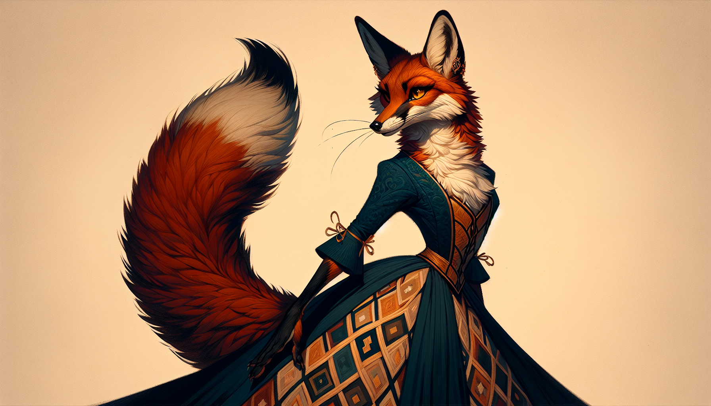
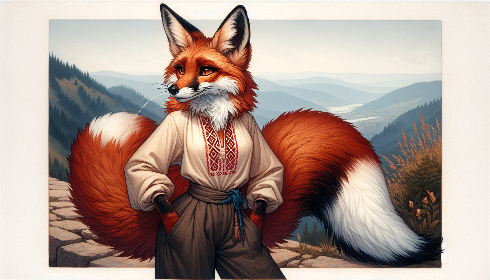

She smells it before she sees it. The Carpathians in early morning: pine resin, cold stone, something damp in the folds of the hillside that has no name in any city she has lived in.
Every geometric pattern on a Hutsul shirt has a name and a meaning. It is a wearable manuscript — and the person wearing it carries their family's entire cosmological worldview against their body. Solar wheels for protection. Tree-of-life for continuity. Water symbols for prosperity.
Vyshyvka is “written,” not painted. Each family line has recognizable pattern variations. A single garment told the room where you came from and whose family line you belonged to. A manuscript no border guard ever thought to confiscate.
These patterns pre-date Christianity. They were protected as identity documents under Soviet rule. Since 2022, Ukrainian soldiers have worn vyshyvanky under their military gear.
- Вишивка — Vyshyvka
- The embroidery pattern itself — not the garment. From the verb “to write.”

Cultural Insight
The embroidery on your sleeves told the room where you came from and whose family line you belonged to. A single garment — a manuscript no border guard ever thought to confiscate.
